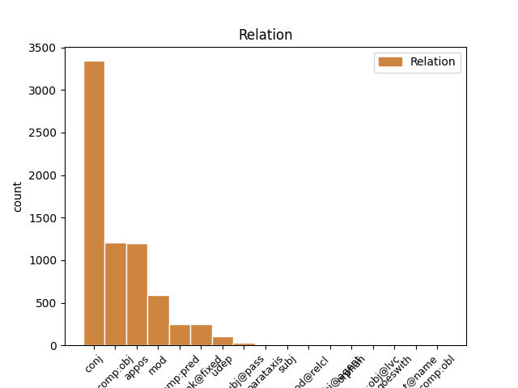
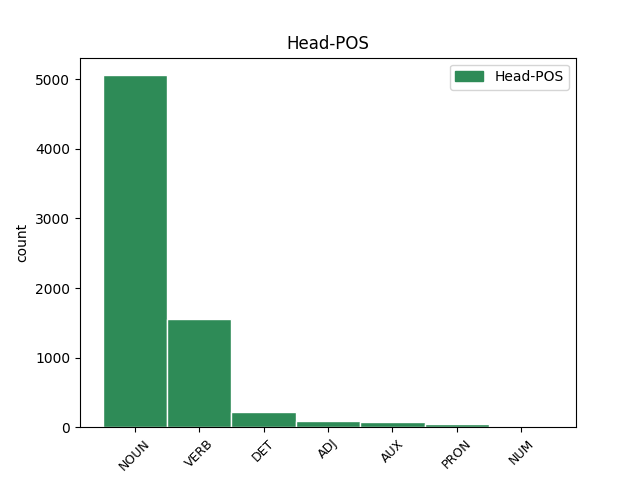
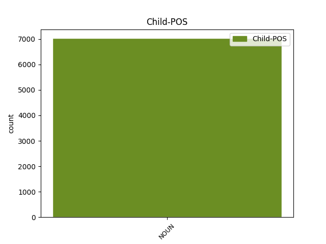

Distribution of features within this leaf



Agreement Rules sorted by frequency.
When the dependent token is None
1 Selon _ _ _ _ 0 _ _ _
2 une _ _ _ _ 0 _ _ _
3 première _ _ _ _ 0 _ _ _
4 hypothèse _ _ _ _ 0 _ _ _
5 , _ _ _ _ 0 _ _ _
6 l' _ _ _ _ 0 _ _ _
7 origine _ _ _ _ 0 _ _ _
8 est _ _ _ _ 0 _ _ _
9 issue _ _ _ _ 0 _ _ _
10 de _ _ _ _ 0 _ _ _
11 l' _ _ _ _ 0 _ _ _
12 appelatif _ _ _ _ 0 _ _ _
13 gaulois _ _ _ _ 0 _ _ _
14 alpe _ _ _ _ 0 _ _ _
15 , _ _ _ _ 0 _ _ _
16 lui-même _ _ _ _ 0 _ _ _
17 issu _ _ _ _ 0 _ _ _
18 d' _ _ _ _ 0 _ _ _
19 une _ _ _ _ 0 _ _ _
20 racine _ _ _ _ 0 _ _ _
21 celtique _ _ _ _ 0 _ _ _
22 ou _ _ _ _ 0 _ _ _
23 pré-celtique _ _ _ _ 0 _ _ _
24 alp _ _ _ _ 0 _ _ _
25 qui _ _ _ _ 0 _ _ _
26 viendrait _ _ _ _ 0 _ _ _
27 dalbos _ _ _ _ 0 _ _ _
28 signifiant _ _ _ _ 0 _ _ _
29 selon _ _ _ _ 0 _ _ _
30 Delamarre _ _ _ _ 0 _ _ _
31 « _ _ _ _ 0 _ _ _
32 le _ _ _ _ 0 _ _ _
33 monde monde NOUN _ Gender=Masc|Number=Sing 0 _ _ _
34 lumineux _ _ _ _ 0 _ _ _
35 , _ _ _ _ 0 _ _ _
36 le _ _ _ _ 0 _ _ _
37 monde monde NOUN _ Gender=Masc|Number=Sing 33 conj _ _
38 d' _ _ _ _ 0 _ _ _
39 en _ _ _ _ 0 _ _ _
40 haut _ _ _ _ 0 _ _ _
41 » _ _ _ _ 0 _ _ _
42 . _ _ _ _ 0 _ _ _
Disagree Examples:
1 Plus _ _ _ _ 0 _ _ _
2 tard _ _ _ _ 0 _ _ _
3 dans _ _ _ _ 0 _ _ _
4 la _ _ _ _ 0 _ _ _
5 saison _ _ _ _ 0 _ _ _
6 , _ _ _ _ 0 _ _ _
7 ils _ _ _ _ 0 _ _ _
8 consomment _ _ _ _ 0 _ _ _
9 beaucoup _ _ _ _ 0 _ _ _
10 de _ _ _ _ 0 _ _ _
11 baies baie NOUN _ Gender=Fem|Number=Plur 0 _ _ _
12 et _ _ _ _ 0 _ _ _
13 autres _ _ _ _ 0 _ _ _
14 petits _ _ _ _ 0 _ _ _
15 fruits fruit NOUN _ Gender=Masc|Number=Plur 11 conj _ SpaceAfter=No
16 . _ _ _ _ 0 _ _ _
1 ARF _ _ _ _ 0 _ _ _
2 ( _ _ _ _ 0 _ _ _
3 Application _ _ _ _ 0 _ _ _
4 Roll-over roll-over NOUN _ Gender=Masc|Number=Sing 5 mod _ _
5 Facility facility NOUN _ Gender=Fem|Number=Sing 0 _ _ _
6 ) _ _ _ _ 0 _ _ _
7 est _ _ _ _ 0 _ _ _
8 un _ _ _ _ 0 _ _ _
9 logiciel _ _ _ _ 0 _ _ _
10 de _ _ _ _ 0 _ _ _
11 haute _ _ _ _ 0 _ _ _
12 disponibilité _ _ _ _ 0 _ _ _
13 , _ _ _ _ 0 _ _ _
14 fonctionnant _ _ _ _ 0 _ _ _
15 sous _ _ _ _ 0 _ _ _
16 AIX _ _ _ _ 0 _ _ _
17 sur _ _ _ _ 0 _ _ _
18 les _ _ _ _ 0 _ _ _
19 machines _ _ _ _ 0 _ _ _
20 Bull _ _ _ _ 0 _ _ _
21 Escala _ _ _ _ 0 _ _ _
22 ou _ _ _ _ 0 _ _ _
23 Linux _ _ _ _ 0 _ _ _
24 sur _ _ _ _ 0 _ _ _
25 les _ _ _ _ 0 _ _ _
26 serveurs _ _ _ _ 0 _ _ _
27 Bull _ _ _ _ 0 _ _ _
28 Novascale _ _ _ _ 0 _ _ _
29 . _ _ _ _ 0 _ _ _
1 Stephen _ _ _ _ 0 _ _ _
2 accuse _ _ _ _ 0 _ _ _
3 Adeang _ _ _ _ 0 _ _ _
4 et _ _ _ _ 0 _ _ _
5 les _ _ _ _ 0 _ _ _
6 autres _ _ _ _ 0 _ _ _
7 députés _ _ _ _ 0 _ _ _
8 de _ _ _ _ 0 _ _ _
9 l' _ _ _ _ 0 _ _ _
10 opposition _ _ _ _ 0 _ _ _
11 d' _ _ _ _ 0 _ _ _
12 avoir _ _ _ _ 0 _ _ _
13 voté voter VERB _ Gender=Masc|Number=Sing|Tense=Past|VerbForm=Part 0 _ _ _
14 la _ _ _ _ 0 _ _ _
15 loi loi NOUN _ Gender=Fem|Number=Sing 13 comp:obj _ _
16 « _ _ _ _ 0 _ _ _
17 après _ _ _ _ 0 _ _ _
18 le _ _ _ _ 0 _ _ _
19 coucher _ _ _ _ 0 _ _ _
20 de _ _ _ _ 0 _ _ _
21 le _ _ _ _ 0 _ _ _
22 soleil _ _ _ _ 0 _ _ _
23 , _ _ _ _ 0 _ _ _
24 le _ _ _ _ 0 _ _ _
25 samedi _ _ _ _ 0 _ _ _
26 de _ _ _ _ 0 _ _ _
27 Pâques _ _ _ _ 0 _ _ _
28 » _ _ _ _ 0 _ _ _
29 , _ _ _ _ 0 _ _ _
30 « _ _ _ _ 0 _ _ _
31 à _ _ _ _ 0 _ _ _
32 la _ _ _ _ 0 _ _ _
33 lueur _ _ _ _ 0 _ _ _
34 de _ _ _ _ 0 _ _ _
35 les _ _ _ _ 0 _ _ _
36 bougies _ _ _ _ 0 _ _ _
37 » _ _ _ _ 0 _ _ _
38 . _ _ _ _ 0 _ _ _
1 Le _ _ _ _ 0 _ _ _
2 secrétaire _ _ _ _ 0 _ _ _
3 général _ _ _ _ 0 _ _ _
4 de _ _ _ _ 0 _ _ _
5 les _ _ _ _ 0 _ _ _
6 nations _ _ _ _ 0 _ _ _
7 Unies _ _ _ _ 0 _ _ _
8 , _ _ _ _ 0 _ _ _
9 Ban _ _ _ _ 0 _ _ _
10 ki-Moon _ _ _ _ 0 _ _ _
11 , _ _ _ _ 0 _ _ _
12 a _ _ _ _ 0 _ _ _
13 soulevé soulever VERB _ Gender=Masc|Number=Sing|Tense=Past|VerbForm=Part 0 _ _ _
14 d' _ _ _ _ 0 _ _ _
15 une _ _ _ _ 0 _ _ _
16 manière _ _ _ _ 0 _ _ _
17 claire _ _ _ _ 0 _ _ _
18 et _ _ _ _ 0 _ _ _
19 objective _ _ _ _ 0 _ _ _
20 , _ _ _ _ 0 _ _ _
21 dans _ _ _ _ 0 _ _ _
22 son _ _ _ _ 0 _ _ _
23 rapport _ _ _ _ 0 _ _ _
24 publié _ _ _ _ 0 _ _ _
25 vendredi _ _ _ _ 0 _ _ _
26 et _ _ _ _ 0 _ _ _
27 qui _ _ _ _ 0 _ _ _
28 sera _ _ _ _ 0 _ _ _
29 examiné _ _ _ _ 0 _ _ _
30 mardi _ _ _ _ 0 _ _ _
31 prochain _ _ _ _ 0 _ _ _
32 par _ _ _ _ 0 _ _ _
33 le _ _ _ _ 0 _ _ _
34 Conseil _ _ _ _ 0 _ _ _
35 de _ _ _ _ 0 _ _ _
36 sécurité _ _ _ _ 0 _ _ _
37 , _ _ _ _ 0 _ _ _
38 l' _ _ _ _ 0 _ _ _
39 urgence urgence NOUN _ Gender=Fem|Number=Sing 13 comp:obj _ _
40 de _ _ _ _ 0 _ _ _
41 faire _ _ _ _ 0 _ _ _
42 face _ _ _ _ 0 _ _ _
43 à _ _ _ _ 0 _ _ _
44 la _ _ _ _ 0 _ _ _
45 situation _ _ _ _ 0 _ _ _
46 relative _ _ _ _ 0 _ _ _
47 à _ _ _ _ 0 _ _ _
48 les _ _ _ _ 0 _ _ _
49 violations _ _ _ _ 0 _ _ _
50 de _ _ _ _ 0 _ _ _
51 les _ _ _ _ 0 _ _ _
52 droits _ _ _ _ 0 _ _ _
53 de _ _ _ _ 0 _ _ _
54 l' _ _ _ _ 0 _ _ _
55 Homme _ _ _ _ 0 _ _ _
56 à _ _ _ _ 0 _ _ _
57 le _ _ _ _ 0 _ _ _
58 Sahara _ _ _ _ 0 _ _ _
59 occidental _ _ _ _ 0 _ _ _
60 . _ _ _ _ 0 _ _ _
1 Tout _ _ _ _ 0 _ _ _
2 en _ _ _ _ 0 _ _ _
3 regrettant _ _ _ _ 0 _ _ _
4 que _ _ _ _ 0 _ _ _
5 le _ _ _ _ 0 _ _ _
6 Conseil _ _ _ _ 0 _ _ _
7 de _ _ _ _ 0 _ _ _
8 sécurité _ _ _ _ 0 _ _ _
9 " _ _ _ _ 0 _ _ _
10 n' _ _ _ _ 0 _ _ _
11 assume _ _ _ _ 0 _ _ _
12 toujours _ _ _ _ 0 _ _ _
13 pas _ _ _ _ 0 _ _ _
14 ses _ _ _ _ 0 _ _ _
15 responsabilités _ _ _ _ 0 _ _ _
16 face _ _ _ _ 0 _ _ _
17 à _ _ _ _ 0 _ _ _
18 la _ _ _ _ 0 _ _ _
19 tragédie _ _ _ _ 0 _ _ _
20 syrienne _ _ _ _ 0 _ _ _
21 " _ _ _ _ 0 _ _ _
22 , _ _ _ _ 0 _ _ _
23 avec _ _ _ _ 0 _ _ _
24 notamment _ _ _ _ 0 _ _ _
25 le _ _ _ _ 0 _ _ _
26 refus _ _ _ _ 0 _ _ _
27 de _ _ _ _ 0 _ _ _
28 la _ _ _ _ 0 _ _ _
29 Russie _ _ _ _ 0 _ _ _
30 et _ _ _ _ 0 _ _ _
31 de _ _ _ _ 0 _ _ _
32 la _ _ _ _ 0 _ _ _
33 Chine _ _ _ _ 0 _ _ _
34 de _ _ _ _ 0 _ _ _
35 voter _ _ _ _ 0 _ _ _
36 des _ _ _ _ 0 _ _ _
37 sanctions _ _ _ _ 0 _ _ _
38 contre _ _ _ _ 0 _ _ _
39 Damas _ _ _ _ 0 _ _ _
40 , _ _ _ _ 0 _ _ _
41 il _ _ _ _ 0 _ _ _
42 a _ _ _ _ 0 _ _ _
43 exclu exclure VERB _ Gender=Masc|Number=Sing|Tense=Past|VerbForm=Part 0 _ _ _
44 toute _ _ _ _ 0 _ _ _
45 initiative initiative NOUN _ Gender=Fem|Number=Sing 43 comp:obj _ _
46 française _ _ _ _ 0 _ _ _
47 en _ _ _ _ 0 _ _ _
48 dehors _ _ _ _ 0 _ _ _
49 de _ _ _ _ 0 _ _ _
50 le _ _ _ _ 0 _ _ _
51 cadre _ _ _ _ 0 _ _ _
52 légal _ _ _ _ 0 _ _ _
53 de _ _ _ _ 0 _ _ _
54 les _ _ _ _ 0 _ _ _
55 Nations _ _ _ _ 0 _ _ _
56 unies _ _ _ _ 0 _ _ _
57 . _ _ _ _ 0 _ _ _